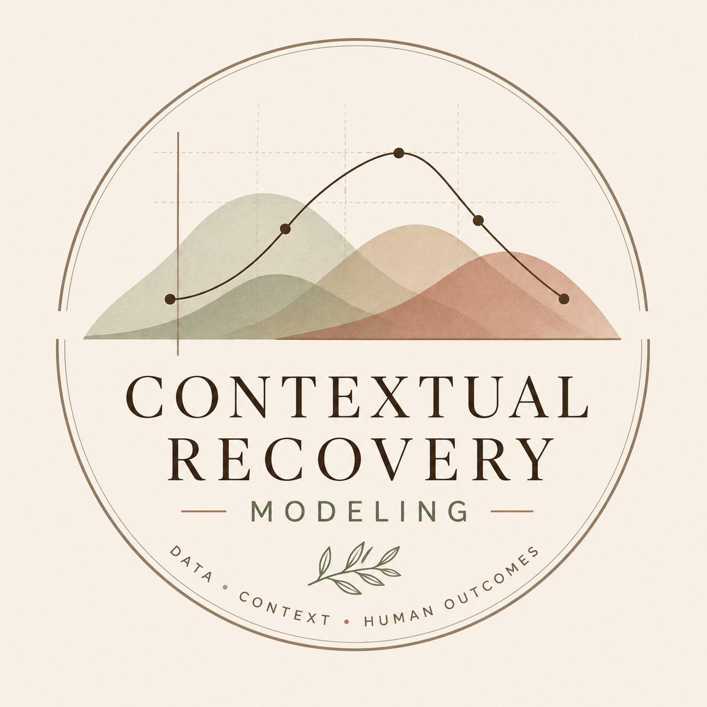

Healthcare Outcomes Modeling
A healthcare analytics project exploring how treatment behavior, adherence patterns, and utilization trends connect to downstream cost and outcomes.
I analyze how human behavior—movement, engagement, environment, and context—shapes real-world outcomes. My work blends data modeling, trend analysis, and storytelling to uncover patterns that traditional datasets often miss.
Each project explores how behavior shapes measurable results—across health, recovery, learning, and engagement.
A healthcare analytics project exploring how treatment behavior, adherence patterns, and utilization trends connect to downstream cost and outcomes.

A behavioral analytics project exploring how context—environment, intensity, and self-reported inputs—shapes next-day recovery. Built from a custom event-level dataset combining wearable and subjective data.
Analysis of how learner behavior and course structure influence completion rates, using SQL-based data modeling and visual storytelling.
Most datasets capture outcomes without explaining why they happen. My work focuses on the missing layer—behavior, environment, and context—to better understand and predict real-world results.
“The most useful data stories do not just show what happened. They explain what behavior may have shaped the outcome.”

I came into analytics through healthcare, but the thread that keeps pulling me forward is behavior: what people do, what systems capture, and what gets missed between the two.
My work focuses on the intersection of behavior and measurable outcomes—whether in healthcare, personal data, recovery, or digital environments. I’m especially interested in questions where the data is incomplete and the context matters.
12+ years in healthcare · 5+ years in analytics · experience across claims data, cohort design, outcome comparison, and stakeholder-facing insight.
Formal training in business analytics, with continued coursework in statistics, calculus, and linear algebra to deepen quantitative rigor.